라인(LINE) LINE Message API 챗봇 만들기
안녕하세요. AkibaTV입니다.
이번에 소개할 내용은 라인(LINE) LINE Message API 챗봇 만들기 입니다.
라인(LINE) Message API 개발자 등록하기에 이어서
본격적으로 라인 챗봇을 만드는 방법을 알아 보도록 하겠습니다.
텔레그램 챗봇에 이어 라인 챗봇까지 만드는 방법을 알게 되시면
누구나 쉽게 챗봇을 만드실수가 있게 됩니다.
라인 챗봇을 만들기 위해 PHP를 이용해서 메세지를 보내보도록 하겠습니다.
Visual Studio Code(비주얼 스튜디오 코드)로 실행하신후 line_webhook.php로 파일을 추가해 주시기 바랍니다.
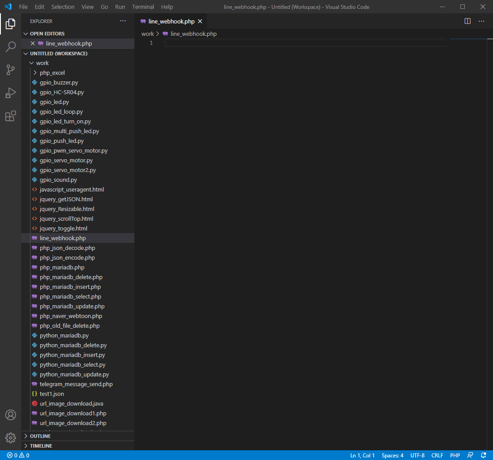
추가를 하셨으면 아래와 같이 코딩을 해주시기 바랍니다.
1
2
3
4
5
6
7
8
9
10
11
12
13
14
15
16
17
18
19
20
21
22
23
24
25
26
27
28
29
30
31
32
33
34
35
36
37
38
39
40
41
42
43
44
45
46
47
48
49
50
51
52
53
54
55
56
57
58
59
60
61
62
63
|
<?php
$json_string = file_get_contents('php://input');
$jsonObj = json_decode($json_string);
$type = $jsonObj->{"events"}[0]->{"message"}->{"type"};
$text = trim($jsonObj->{"events"}[0]->{"message"}->{"text"});
$replyToken = $jsonObj->{"events"}[0]->{"replyToken"};
$userId = $jsonObj->{"events"}[0]->{"source"}->{"userId"};
if($type != "text"){
exit;
}
$apiUrl = "https://api.line.me/v2/bot/message/reply";
$accessToken = "Line 토큰정보";
$messages = array(
'type' => 'text',
'text' => '알수없는 명령어 입니다.'
);
if (!empty($text)) {
if ($text == "하이" || $text == "안녕") {
$snedMessage = "안녕하세요. AkibaTV입니다.";
} else if ($text == "도움말") {
$snedMessage = "도움말 입니다.\n";
$snedMessage .= "현재 사용가능한 명령어는\n";
$snedMessage .= "하이, 안녕, 도움말이 있습니다.\n";
} else {
$snedMessage = "등록 되어있지 않은 명령어 입니다.";
}
$messages['text'] = $snedMessage;
}
if(!empty($messages)) {
$post_data = [
"replyToken" => $replyToken,
"messages" => [$messages]
];
$ch = curl_init($apiUrl);
curl_setopt($ch, CURLOPT_POST, true);
curl_setopt($ch, CURLOPT_CUSTOMREQUEST, 'POST');
curl_setopt($ch, CURLOPT_RETURNTRANSFER, true);
curl_setopt($ch, CURLOPT_POSTFIELDS, json_encode($post_data));
curl_setopt($ch, CURLOPT_HTTPHEADER, array(
'Content-Type: application/json; charser=UTF-8',
'Authorization: Bearer ' . $accessToken
));
$result = curl_exec($ch);
curl_close($ch);
}
?>
|
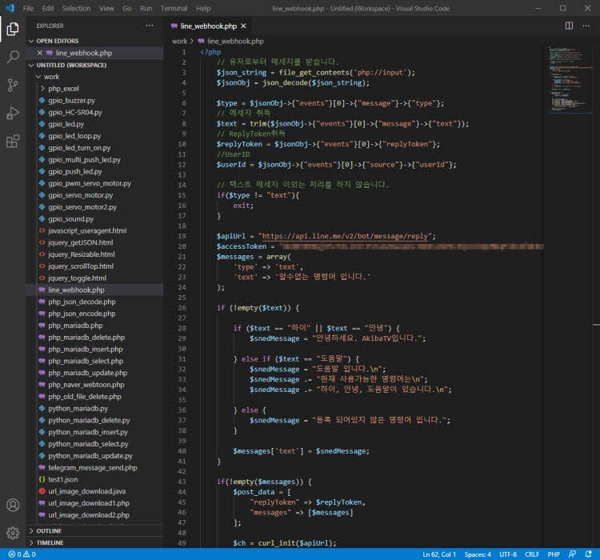
실제로 제대로 동작을 하는지 확인을 해보도록 하겠습니다.
라인봇을 동작하기 위해선 웹훅을 올려놓을 서버가 반듯이 https를 지원하는 서버이어야만 합니다.
저의 경우 웹호스팅 서버가 https를 지원하기에 웹호스팅 서버에 올려놓도록 하겠습니다.
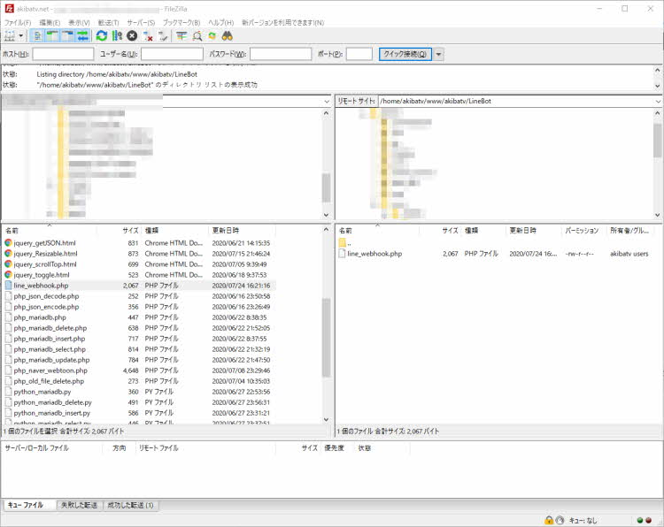
라인 개발자 페이지에 로그인을 해주시기 바랍니다.
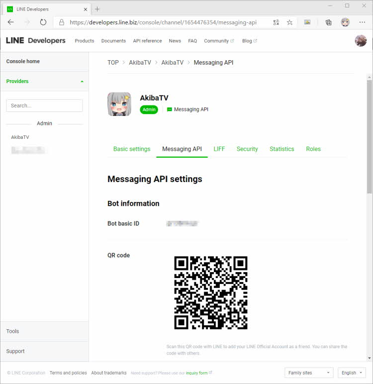
Messaging API탭으로 이동을 하신후 스크롤을 해주시면
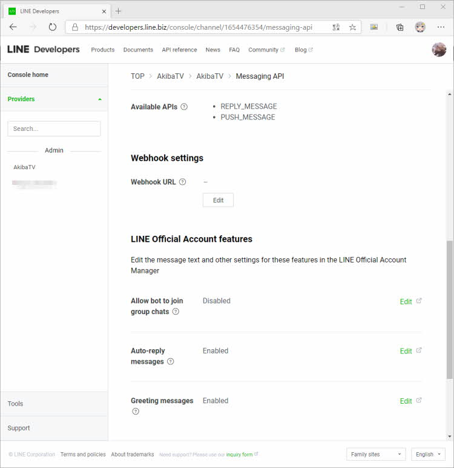
Webhook setting이 나오게 됩니다. 그럼 Webhook URL의 Edit버튼을 눌러주시고
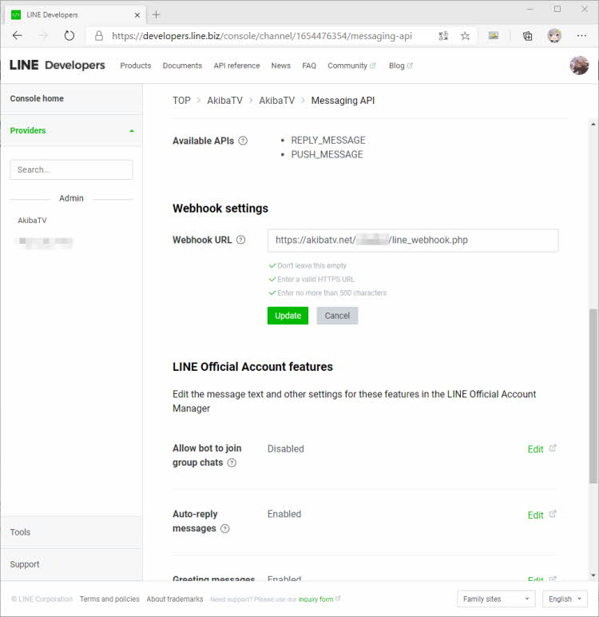
line_webhook.php을 작성하신 URL을 적어주시면 되겠습니다.
그리고 Update버튼을 눌러주시기 바랍니다.
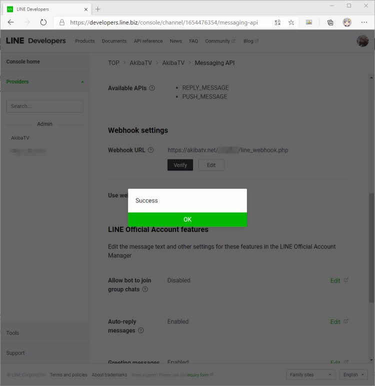
Verity버튼을 눌러서 등록하신 URL이 정상 작동하는지 체크를 합니다.
Success가 나오면 문제없이 작동하고 있는것 입니다.
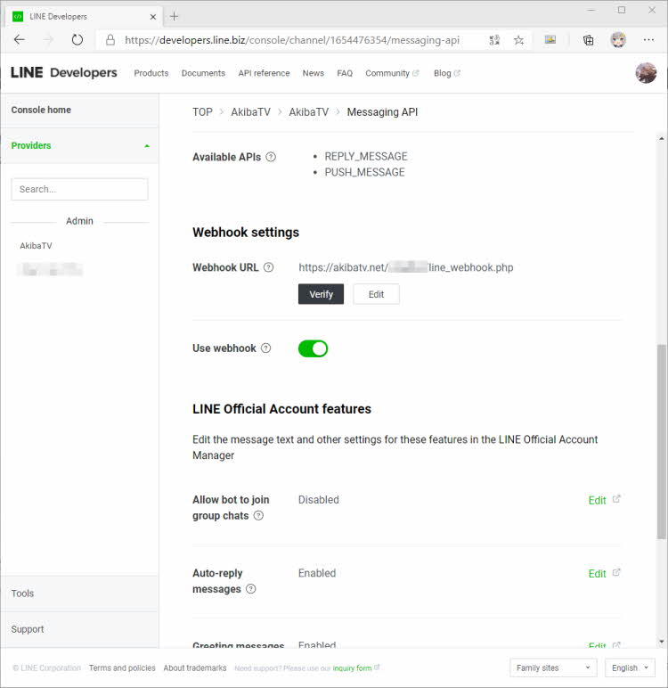
Use webhook을 활성화 시켜주셔서 웹훅을 사용가능하게 변경해 줍니다.
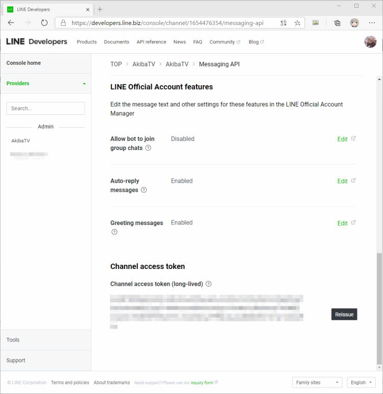
Channal access token입니다만 이것은 코딩을 하실때 여기에 나오는 억세스 토큰을 입력해 주시기 바랍니다.
위의 과정까지 다 하셨으면 일단 모든 과정은 끝났습니다.
실제 라인에서 동작 확인을 해보도록 하기 위해서
위에 QR코드를 이용해서 친구 등록을 해주시면 아래와 같이 챗봇의 채팅방이 개설이 됩니다.
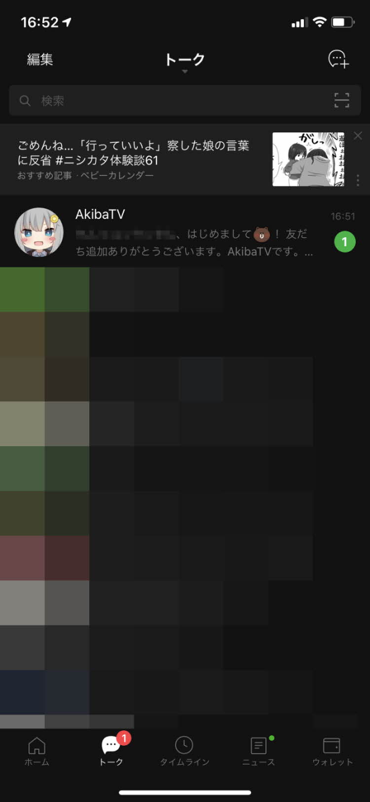
채팅방이 개설이 된후 채팅방으로 들어가시면
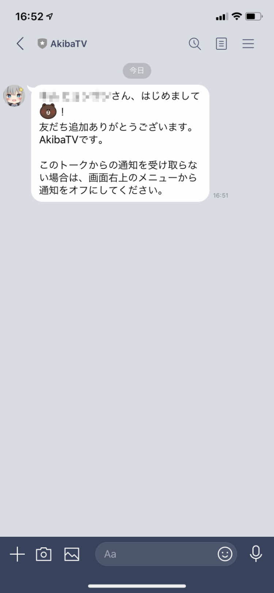
위와같이 기본 환영 메세지가 나오게 됩니다.
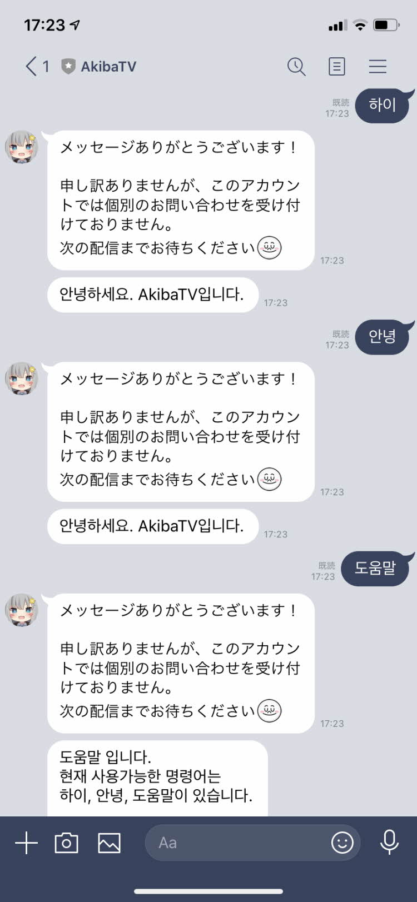
코딩시에 등록한 명령어들을 입력을 하시면 위와같이 챗봇이 반응을하고
답변을 주는 형태로 되어 있습니다.
일본어로 나오는 메세지에 대해서는 설정문제로 계속 나옵니다만
문제가 해결되면 해결방안에 대해서 설명을 올리도록 하겠습니다.